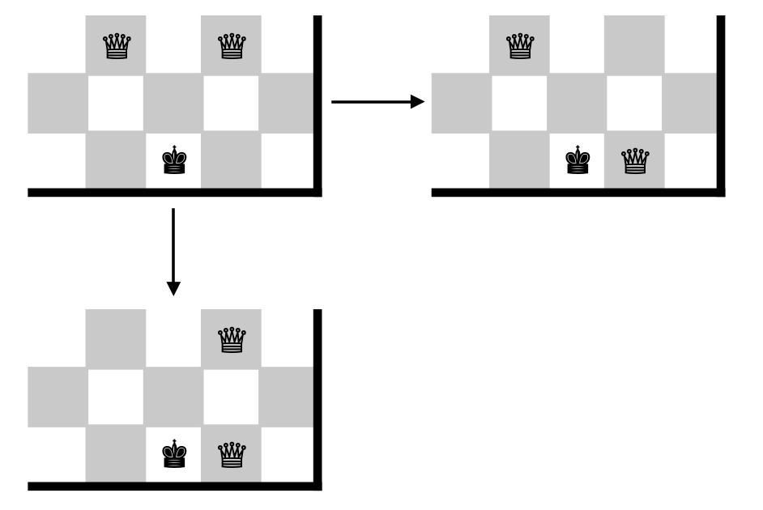

Stage 1 プログラムの機能を考える
1-3 運営の機能を考える
まあ勝敗なんて当人たちが勝手につければいいんですよ。いいんですけど、そりゃあゲーム作るうえで "GAME OVER..." みたいなのやりたいじゃないですか。やっぱし作りたいじゃないですか。

いや、作らなくていいっす
それに棋譜では「チェックメイトの手」という記述をすることもあるくらいです。やっぱり勝敗判定は必要になります。

Qg1 だけだとどっちかわからないけど「チェックメイトの方」って言われれば右上確定だな
チェスにおいて勝敗は白勝ち・黒勝ちと引き分けの3種類、勝敗のつきかたはキングを取られる・チェックメイト・ステイルメイト・リザイン(投了)の 4 種類です。これを判断する機能も付けたいですね。
~~~~~~~~~~~~~~~
チェックメイトを判断するには何よりチェックを判断できるようにならなければいけません。そしてチェックを判断するにはキングの居場所を特定しなければなりません。そこでまずは
キングはどこにいるか
を探します。キングの居所がわかったら、キングの居所まで駒を動かせるか調べれば、チェックを判定できますね。
判定って？どうすんのさ
1-2 で考えた判定機能を使えば一瞬ですよ。
そしてチェックの機能を使って「どうやって動いてもチェック」であればチェックメイトと判断すればいい。
ステイルメイトだって、「今はチェックされていないけど、これからどう動いてもチェックされる」ということを判断すればいいですね。
次回予告
だいたいの概要が決まったところで、今度は本格的にコードを書いていきます。プログラムを書く準備はできているでしょうか。
まあ、最初はボードゲーム作ったことのある人ならだれでもやったことがある「2次元配列」です。「それなら復習だぜ」って人が多いでしょうから、気楽に見ていきましょう。
え？何それ初耳
お前ちょっと覚悟しとけよ。